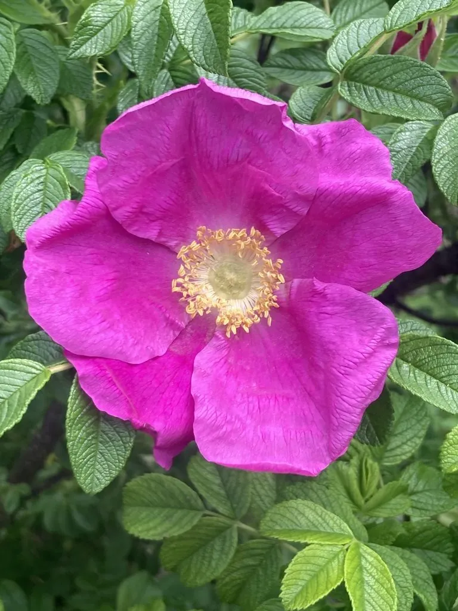

灌木与花木 · 植物界
玫瑰 Rosa rugosa

原产东亚的落叶灌木，花多为紫红色、香气浓郁，花瓣可制玫瑰酱与玫瑰精油，是象征爱情的经典花卉。
- 分类
- 门被子植物门纲木兰纲目蔷薇目科蔷薇科属蔷薇属
- 栖息环境
- 海拔 2000 米以下的山坡、灌丛与沙地，喜光耐寒耐旱
- 地理分布
- 中国华北、东北及山东、甘肃等地，朝鲜半岛、日本也有分布
- 保护级别
- 暂无评估；中国未列入国家重点保护野生植物名录
物种志
玫瑰为落叶灌木，高可达 2 m，茎粗壮、密生细刺与刚毛；奇数羽状复叶，小叶 5–9 枚，椭圆形，表面皱缩、叶脉下陷，背面灰白色并密被绒毛，这是玫瑰区别于月季的重要特征。花单生或 3–6 朵簇生，花径 6–8 cm，紫红色或白色，花瓣倒卵形，香气浓郁；蔷薇果扁球形，成熟时砖红色。
玫瑰原产中国华北、东北及朝鲜半岛、日本，喜光、耐寒、耐旱，适宜疏松肥沃、排水良好的土壤。鲜花可提取玫瑰精油，是香料工业中价格昂贵的原料；花瓣可制玫瑰酱、玫瑰酒与花茶，花蕾入药可行气解郁；果实富含维生素 C。玫瑰在世界范围内象征爱情，保加利亚以玫瑰谷闻名，中国山东平阴、甘肃苦水等地也是著名的玫瑰产区。
形态与习性
- 株高可达 2 m，茎密生细刺与刚毛
- 花期5–6 月，一年开一次
- 果期8–9 月，蔷薇果砖红色
- 光照喜光，不耐庇荫
- 水分耐旱，怕积水
- 土壤疏松肥沃、排水良好的沙壤土
- 主要用途提取玫瑰精油、制玫瑰酱与花茶、药用
趣味知识
- 玫瑰叶片表面皱缩、背面有绒毛，而月季叶片光滑，这是区分二者的关键。
- 约 3–5 吨玫瑰花瓣才能提取 1 kg 玫瑰精油，因此玫瑰精油价格昂贵。
- 保加利亚的玫瑰谷以种植油用玫瑰闻名，是世界玫瑰精油的重要产地。
- 玫瑰的花蕾入药称“玫瑰花”，具有行气解郁的功效。